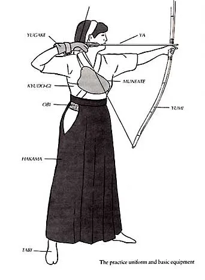

Jessica Gerrity Instagram
"Kyudo" is a Japanese martial art in which the mind and body are trained through a series of conduct in shooting a Japanese bow and arrow at a target. It developed long ago as Kyujutsu (the art of Japanese archery) for tactics and military art, and today it's also considered a sport or a healthful exercise. Meanwhile, some schools from ancient times still exist and are preserving the traditional school while coexisting with modern Kyudo.
The Japanese Bowman's Equipment
The bow, or yumi is 7 feet long and made up of laminated bamboo. The grip is 1/3 towards the bottom. The grip point of the bow is at a vibrational node of the bow - around 1/4 and 3/4 points of the bow from the ends. The grip is right there at a 3/4 point to avoid vibration from the recoil fouling the shot.
The arrow, or ya is up to a meter long, this allows the bow to be drawn to the shoulder as oposed to the cheek.
The bow is drawn with the thumb, a yugake (the glove), is necessary
The uniform itself is called the obi, sash, and hakamaor split skirt, with either a kyudo-gi, or jacket, or a kimono for the higher ranks.
The women would often time wear a leather covering called a Muneate to protect the breasts from the release of the string.
"If you are upset or nervous, that is proof you lack something. Do not be sad or gloomy - foster virtue, feel compassion, and you can save even devils."
― Awa Kenzo - Zen Bow, Zen Arrow
Watch Art of Kyudo
Visit the International Kyudo Federation.
Email: Roman Sokol | CSCI1143 | HW3